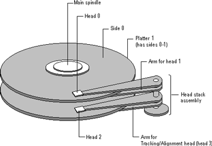
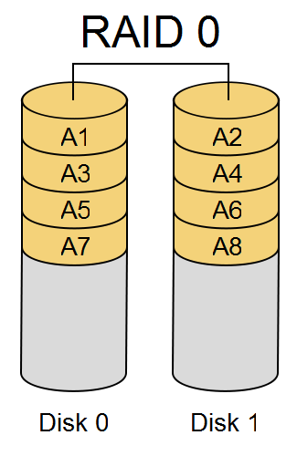
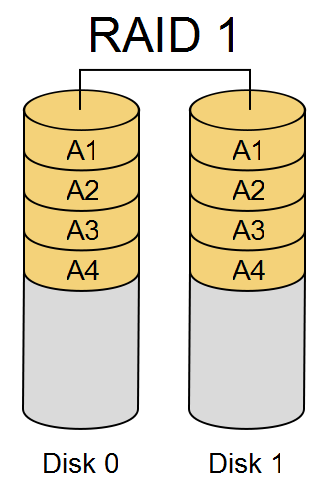
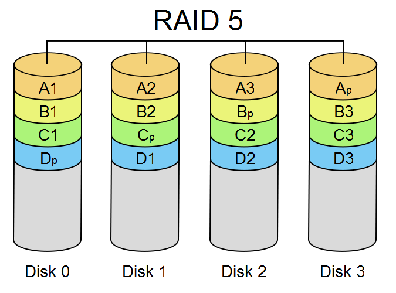
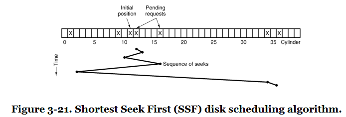
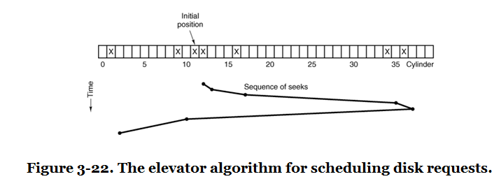

Storage and Devices#
Storage devices provide persistent or transient places to keep data. Operating systems hide many device details behind block devices, filesystems, caches, and scheduling policies.
Storage Devices#
Permanent storage keeps data after power is removed.
Common permanent media include magnetic devices such as hard disks and tape, optical devices such as CD, DVD, and Blu-ray, and solid-state devices such as flash storage. Transient storage includes RAM and processor caches.
IDE and ATA#
IDE and ATA moved much of the responsibility for disk control into the drive itself.
This made systems less dependent on motherboard-specific details about disk arms and motors. ATA devices present storage as 512-byte blocks. Classic ATA uses a 40-pin connector, a 16-bit data bus, and transfer rates such as 16, 33, 66, 100, and 133 MB/s.
ATAPI#
ATAPI extends ATA with commands needed by devices other than hard disks.
Commands such as eject allowed CD, DVD, and Zip drives to use an ATA-compatible interface. ATAPI also helped improve performance through DMA, which lets devices transfer data directly to physical memory without interrupting the CPU for every bus operation.
SATA#
Serial ATA, or SATA, reduces cabling and supports faster serial transfer rates than classic parallel ATA.
SATA supports hot swapping, the ATAPI command interface, and transfer rates such as 1.5 Gb/s, 3 Gb/s, and 6 Gb/s. Many SATA controllers use AHCI, which supports hotplug and native command queuing. Older operating systems may fall back to ATA-style behavior even when the hardware supports AHCI.
Hard Disk Geometry#
Traditional disk geometry describes storage with cylinders, heads, and sectors.
A sector is the basic addressable unit on the disk. A cylinder is a set of tracks at the same radius across platters. A head reads or writes one side of a platter. A CHS address is a tuple of cylinder, head, and sector.

Logical Block Addressing#
Logical block addressing, or LBA, converts physical geometry into a linear block number.
For a CHS tuple, one common conversion is:
A = (C * Nh + H) * Ns + (S - 1)
Nh is the number of heads, and Ns is the number of sectors per
track.
Storage and Failure#
Storage devices fail, so operating systems and storage systems must design for failure.
Large-scale studies have shown that disk failure rates vary by age, model, workload, and environment. The practical lesson is simple: durable systems need redundancy, monitoring, and recovery plans rather than an assumption that individual devices will keep working.
Maximizing Availability with RAID#
RAID uses multiple disks to improve capacity, performance, or availability.
RAID 0 stripes data across disks but provides no redundancy. RAID 1 mirrors data across disks. RAID 5 and RAID 6 stripe data and store parity so the system can recover after one or more disk failures.
RAID Implementation#
RAID can be implemented in hardware, partly in hardware, or in software.
A full hardware controller presents several disks as one logical device. A partial hardware controller may still depend on the host CPU for parity or buffering. Software RAID is implemented by the operating system and presented upward to the filesystem layer as a storage device.
RAID 0#
RAID 0 stripes data across disks.

RAID 0 improves capacity and throughput but does not provide redundancy. If one disk fails, the array loses data.
RAID 1#
RAID 1 mirrors data across disks.

RAID 1 can survive the loss of one mirrored disk. It costs more capacity because each block is stored more than once.
RAID 5#
RAID 5 stripes data and parity across disks.

The parity information lets the array reconstruct data from a failed disk. RAID 5 needs at least three disks.
RAID 5 Parity Write#
Parity can be computed with exclusive-or.
size_t parityWrite(
int fd0, int fd1, int fd2,
const void *buf0, const void *buf1,
size_t count) {
for(size_t i = 0; i < count; i++) {
char byte0 = ((char*)buf0)[i];
char byte1 = ((char*)buf1)[i];
char parity = byte0 ^ byte1;
write(fd0, &byte0, sizeof(char));
write(fd1, &byte1, sizeof(char));
write(fd2, &parity, sizeof(char));
}
return count;
}
Key points:
Two data streams are written to
fd0andfd1.The parity byte is computed with XOR.
The parity stream is written to
fd2.Any one of the three streams can be reconstructed from the other two.
RAID 5 Parity Read#
The same XOR operation can recover missing data.
size_t parityRead(int fd0, int fd1, void *buf, size_t count) {
char *buff0 = (char*)malloc(count);
char *buff1 = (char*)malloc(count);
char *buff = (char*)buf;
read(fd0, buff0, count);
read(fd1, buff1, count);
for(size_t i = 0; i < count; i++) {
buff[i] = buff0[i] ^ buff1[i];
}
return count;
}
Key points:
The function reads two surviving streams.
XOR reconstructs the missing stream.
The caller chooses which two files represent the surviving data.
This example shows the parity idea, not a full RAID implementation.
RAID 5 Recovery Example#
This example writes two data files and one parity file, deletes one data file, and reconstructs the missing data.
int main(int argc, char** argv) {
int fd0 = open("f0", O_CREAT|O_TRUNC|O_RDWR, 0666);
int fd1 = open("f1", O_CREAT|O_TRUNC|O_RDWR, 0666);
int fd2 = open("f2", O_CREAT|O_TRUNC|O_RDWR, 0666);
const char* msg0 = "hello world\n";
const char* msg1 = "testing 123\n";
parityWrite(fd0,fd1,fd2,msg0,msg1,strlen(msg0)+1);
close(fd0);
close(fd1);
close(fd2);
unlink("f1");
fd0 = open("f0", O_RDWR, 0666);
fd2 = open("f2", O_RDWR, 0666);
size_t msgSize = sizeof(char)*strlen(msg0)+1;
char *buff = (char*)malloc(msgSize);
parityRead(fd0, fd2, buff, msgSize);
printf("f1 contents are = %s\n", buff);
close(fd0);
close(fd2);
free(buff);
unlink("f0");
unlink("f2");
return 0;
}
Key points:
f0andf1hold data whilef2holds parity.Deleting
f1simulates losing one storage device.parityRead()reconstructs the missing contents fromf0andf2.Losing any one stream causes no data loss in this simplified model.
Disk Partitioning#
Partitions divide a disk into regions with different roles or formats.
A disk may contain filesystems, swap space, recovery areas, and partitions used by other operating systems. On traditional PC systems, the master boot record format supports up to four primary partitions. One primary partition can be an extended partition containing multiple logical partitions.
Disk Arms and Heads#
Mechanical disks have moving parts that affect performance.
The disk motor spins platters under the heads. A head moves to the right track before a sector can be read or written. The time spent moving the head is seek time, and disk scheduling algorithms try to reduce it.
Good Disk Scheduling#
A good disk scheduling algorithm balances throughput, latency, and fairness.
It should avoid unnecessary head movement, prefer nearby requests when reasonable, and prevent any request from waiting too long.
Disk Scheduling Algorithms#
Common disk scheduling algorithms include FIFO, shortest seek first, the elevator algorithm, and FSCAN.
These algorithms were most important for mechanical disks. Solid-state storage changes the cost model because there is no physical head seek, but request ordering can still matter for queues, controllers, and internal device behavior.
FIFO Disk Scheduling#
FIFO serves requests in arrival order.
It is simple and fair, but it does not minimize head movement. A request far from the current head position is served when it reaches the front of the queue, even if many nearby requests are waiting.
Shortest Seek First#
Shortest seek first serves the request closest to the current head position.
This reduces total seek distance, but it can starve requests far from the current head position if nearby requests keep arriving.

Elevator Algorithm#
The elevator algorithm moves the disk head in one direction, serving requests along the way, and then reverses direction.
The idea is similar to an elevator serving floors. Requests in the current direction are served in order, and the direction changes only at the end of the sweep. This prevents starvation better than shortest seek first.

Elevator Tradeoffs#
The elevator algorithm improves fairness but is not perfectly balanced.
Middle tracks can receive better average service because they are closer to more sweeps. Variants can reduce this imbalance by sweeping in one logical direction and returning to the beginning before serving again.
FSCAN#
FSCAN separates current requests from new requests.
The scheduler services a fixed queue of requests while placing new requests into a second queue. When the first queue is empty, the second queue becomes the active queue. This bounds waiting time because new arrivals cannot constantly jump ahead of older requests.